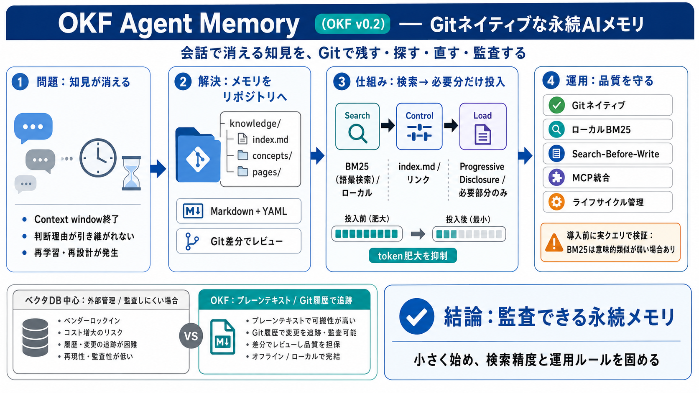

Open Knowledge Format (OKF): Enterprise Guide 2026 | Wavect
Open Knowledge Format (OKF) is Google Cloud's open, vendor-neutral specification for packaging organizational knowledge …

判断理由が次回に引き継がれない / 再学習・再設計が発生
残る・探せる・直せる・監査できる（audit：監査）
knowledge/ ├─ index.md ├─ concepts/ └─ pages/ （例）YAML frontmatter + Markdown本文で出所・信頼度・ライフサイクルを扱う
BM25 / 語彙検索
index.md / 階層
必要部分のみ（リンク）
埋め込み・外部管理 / 監査が難しくなりがち
Markdown（YAML frontmatter付き）/ Git履歴で追跡
knowledge/へ保存し、レビュー・差分で監査
埋め込みAPI不要 / 高速・低コスト指向
index.md＋リンクで必要分だけ読み込み
既存検索後に追記し、分裂を抑制
Claude Code / Cursor等とstdioで連携
速度・監査性・運用コストを両立
<300µs（概念検索）という主張
埋め込みAPIを介さないため、クエリ費用を抑制
全文投入 → token肥大 / 応答遅延
階層インデックス＋リンクで絞り込み
validate / search / show / create / update / bootstrap
Claude Code / Cursor等とstdioで連携
BM25の意味的弱さ → タグ/命名/メタデータが効く
stale_after等のライフサイクル運用ルールの具体性が要確認
大規模データでの性能上限は追加情報が必要
PII/機密の混入防止は、入力チェックとアクセス制御が鍵
Git差分でレビュー / ローカルBM25 / token肥大の抑制
小さく始め、検索精度と運用ルールを固める
Open Knowledge Format (OKF) is Google Cloud's open, vendor-neutral specification for packaging organizational knowledge …
undefinedyaml verified: { by: human:ahormati, at: 2026-06-25T09:00:00Z } undefined ### 5.3 Trust tiers . Trust tiers a…
Try now When we introduced the Open Knowledge Format (OKF) in June 2026, we asserted that the context that agents need …
This integration begins to close that gap. We’ve connected Google’s Open Knowledge Format (OKF) (an open, vendor-neutral…
Go deeper: Claude Code Mastery → ← Back to blog explainx / blog # Open Knowledge Format (OKF): Google's Standard for A…